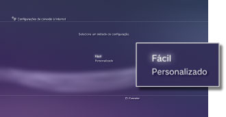
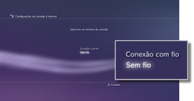
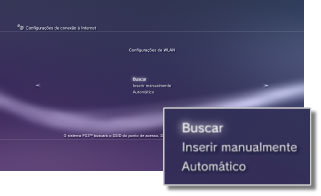
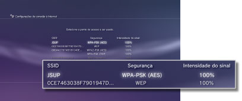
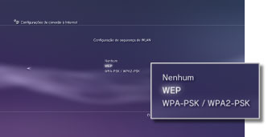
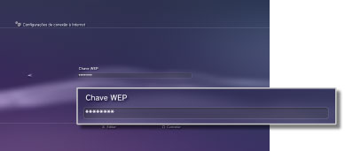

Configurações > Configurações de rede > Configurações de conexão à Internet (conexão sem fio)
Configurações de conexão à Internet (conexão sem fio)
Esta configuração está disponível apenas em sistemas PS3™ equipados com o recurso de LAN sem fio.
Selecione o método de conexão do sistema com a Internet. As configurações de conexão com a Internet variam dependendo do ambiente de rede e dos dispositivos em uso. O procedimento a seguir descreve a configuração típica para conectar-se à Internet sem fio.
1. |
Verifique se as configurações do ponto de acesso foram concluídas. |
|---|---|
2. |
Confirme se um cabo Ethernet não está conectado ao sistema PS3™. |
3. |
Selecione |
4. |
Selecione [Configurações de conexão à Internet]. |
5. |
Selecione [Fácil].  |
6. |
Selecione [Sem fio].  |
7. |
Selecione [Buscar].  |
8. |
Selecione o ponto de acesso que deseja utilizar.  |
9. |
Verifique o SSID do ponto de acesso. |
10. |
Selecione as configurações de segurança que deseja utilizar.  |
11. |
Insira uma chave de criptografia.  Quando houver inserido a chave de criptografia e confirmado a configuração de rede, uma lista de configurações será exibida. |
12. |
Salve suas configurações. |
13. |
Teste sua conexão. |
14. |
Confirme os resultados do teste de conexão. |
 (Configurações) >
(Configurações) >  (Configurações de rede).
(Configurações de rede).Dicas
- Se o teste de conexão falhar, siga as instruções na tela para verificar as configurações. Consulte também as informações de seu provedor de serviços de Internet e as instruções fornecidas com o dispositivo de rede em uso.
- Se você testar a conexão imediatamente após selecionar [Automático] > [AOSS™] na etapa 7, as configurações do roteador podem não estar concluídas ainda e a conexão poderá falhar. Aguarde aproximadamente 1 ou 2 minutos antes de testar a conexão.